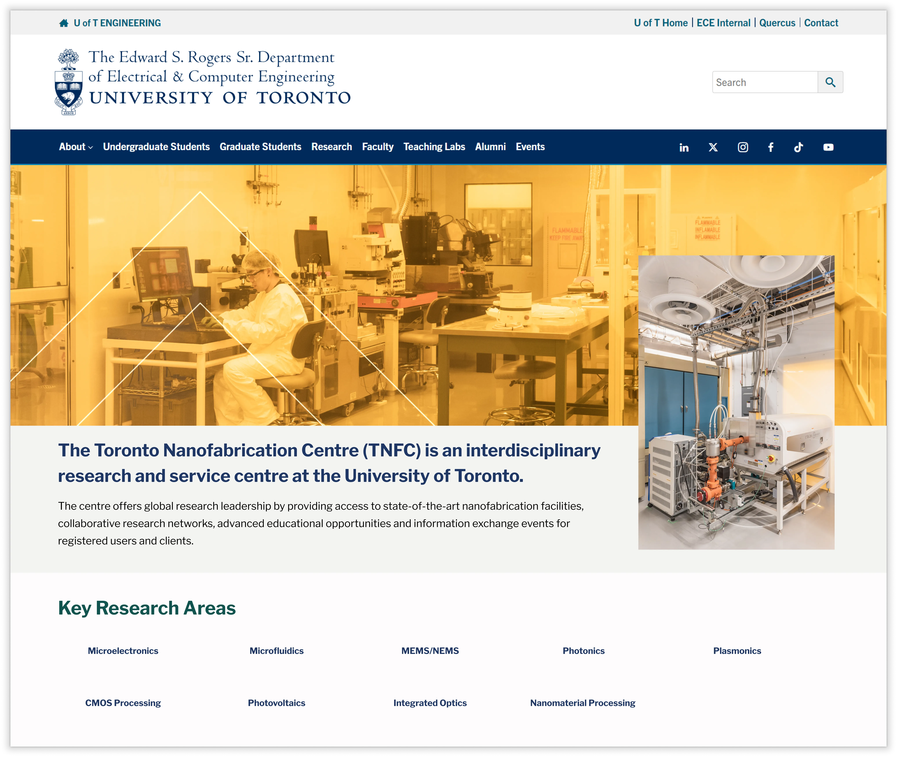
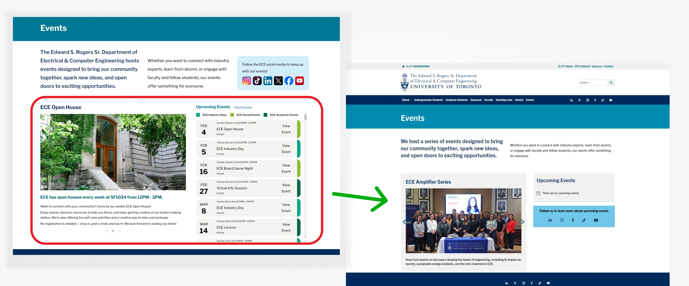
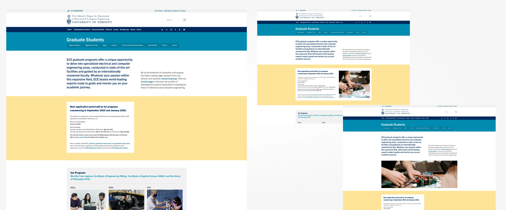
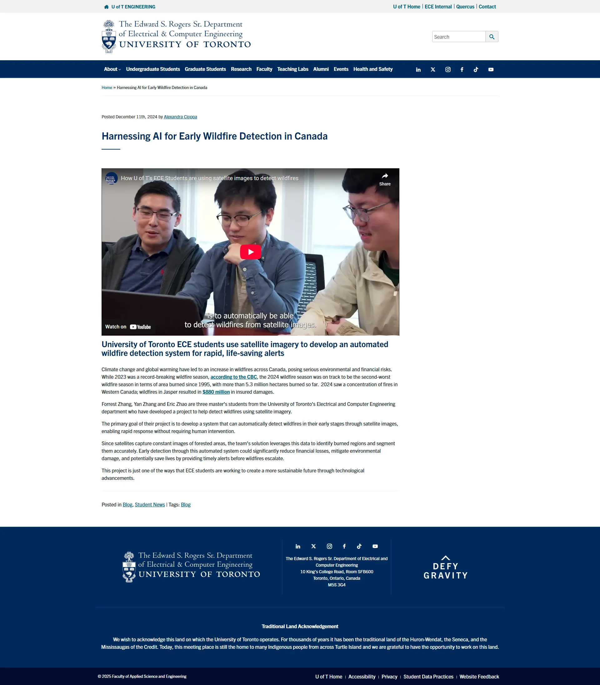

Web Production Design for the ECE Department
Between June 2024 and March 2025, I worked with the ECE Department at the University of Toronto to redesign, update, and manage their public-facing website and intranet. My work combined accessibility auditing, content design using Canva and Figma, stakeholder coordination, and full page builds in WordPress.
Responsibilities
Maintain the ECE's public website and their intranet while coordinating with internal stakeholders and teams for content updates.
My Approach
01 Understand
Study Website and obtain a firm grasp on the unique needs and technical constraints of all website users.
02 Examine
Perform detailed audits of the website's content and existing features to determine what works, and room for improvement.
03 Reframe
Design mockups and obtain stakeholder approval
What I did
Building and QA for web
As part of my role, I frequently created mockups in Figma to visualize and refine design changes before implementating them in WordPress. These ranged from full-page redesigns to smaller, incremental updates where I adjusted layouts, components, or added new content blocks to existing pages.
Rebuilding Key Pages

This process allowed stakeholders to preview changes early and provide feedback before any development work was done. By iterating through mockups first, I helped the department save time on revisions and ship pages that were both user-friendly and visually consistent with U of T's branding guidelines (available publicly here).

However, unless you are willing to invest time in developing a custom events widget, the limitations of WordPress' default widgets quickly become apparent. While we could have created a new widget to match my mockup, the goal was to contextualize the Events page, not to work on aesthetics without adding function. Hence, what we ended up going with:


Identifying opportunities with website content
I also updated content directly on the website, uploaded new blog posts, and modified images to ensure consistency with the department’s branding and design standards. These updates helped keep the site current and engaging for students and visitors.
Focus on real day-to-day requirements


Key Pages built
ECE Events Page ↗
Shipped | March 2025
Contextualized static Events calendar widget into an informative Events Page.
Toronto Nanofabrication Centre ↗
Shipped | March 2025
Migrated the TNFC lab (Before: pre-existing website built using WP template; After: Inside ECE Website - Consistent Layout + ECE at U of T Branding) into the main ECE website.
ECE Department’s Home Page ↗
Shipped | January 2025
Redesigned to make it easier for prospective students to explore ECE.
Industry Opportunities ↗
Shipped | December 2024
Created a new page to show Partnership and sponsorship opportunities at ECE.
Student Research Opportunities ↗
Shipped | December 2024
Created a new section under Research to showcase student work.
Latest News and Insights ↗
Shipped | December 2024
Created a new page to showcase News / Blog posts available on the website.
Related Case Studies
ECE Homepage Redesign
Discover the full homepage redesign project, including mockups, design iterations, and implementation process. This case study highlights how I improved accessibility, usability, and visual consistency across the department’s main landing page.